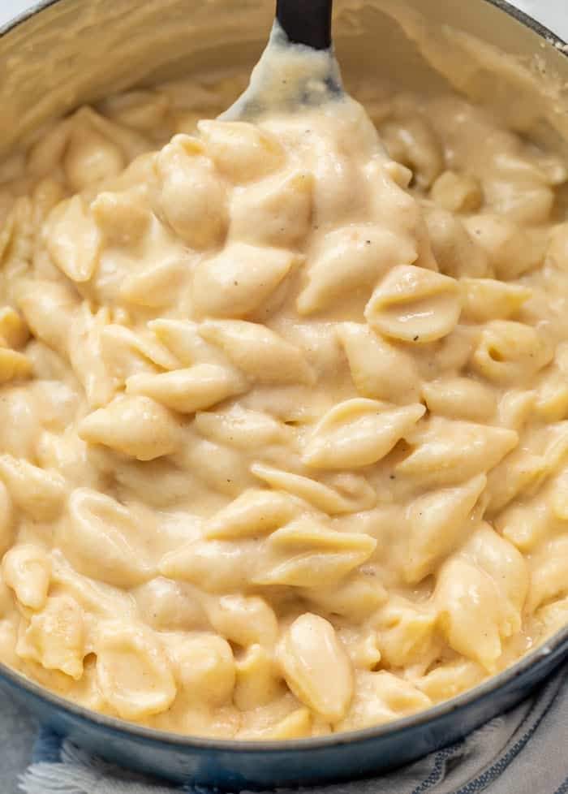

Panera Mac n' Cheese

Description
The ultimate copycat panera mac n' cheese recipe. Have you ever been craving panera mac n cheese at 3:32 am? Well now is your chance to create the very thing you swore off!
Ingredients
- 1 lb. medium pasta shells
- 1/4 cup butter
- 1/4 cup flour
- 3 cups Cracker barrel Vermont White Cheddar, shredded
- 1 cup heavy cream
- 2 cups milk
- 3/4 teaspoon salt
- 1/2 teaspoon pepper
- 1 teaspoon ground mustard
- 1/4 teaspoon hot sauce
Instructions
- Shred the cheese first and set aside. It should be close to room temperature when added to the sauce
- Boil a large pot of water and cook according to pasta package instructions. Drain well when finished. Prepare the sauce while the water boils and the pasta cooks
- PRO TIP: Measure out all of your ingredients and have them ready when you start the sauce. This is especially true of the cheese as it shouldn't be cold when added to the base
- Melt the butter in a saucepan over medium heat. Whisk in the flour for 1 minute, until it begins to turn a light golden color
- Slowly whisk in the heavy cream and milk. Whisk for about 3 minutes
- Add the seasonings and hot sauce
- Reduce heat to low. Slowly sprinkle in the shredded cheese, stirring as you do so
- Whisk continuously until smooth and thickened. Remove from heat
- Add boiled pasta and stir to combine. Serve!
home